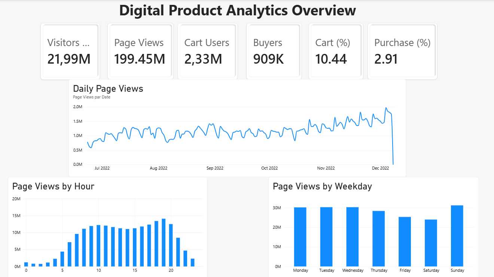
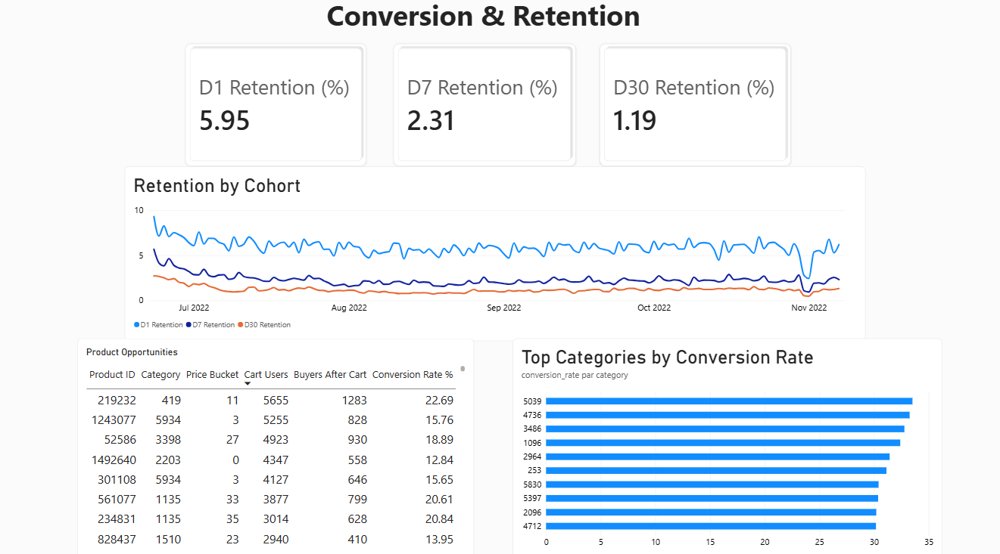

01
Comprendre les parcours
par la donnée.
Analyser un jeu de données e-commerce volumineux pour explorer le trafic, le funnel de conversion, les produits et la rétention. Construire le flux analytique : contrôles qualité Python, agrégations DuckDB, modélisation PostgreSQL, analyses SQL et restitution Power BI.
Code et documentation sur GitHub ↗Ma contribution & les livrables
- Analyses du trafic, du funnel, des produits, de la rétention et des cohortes.
- Construction de tables BI dédiées aux KPI, au trafic quotidien et aux comportements horaires.
- Dashboard Power BI en deux pages : vue d’ensemble, conversion et rétention.
- Agrégation directe des 199 millions de pages vues avec DuckDB avant ingestion dans PostgreSQL.
- Validation de la couverture des données : le taux visite–achat est défini sur les visiteurs observés, et ne représente pas un taux global de la plateforme.
Analyse réalisée sur le jeu de données e-commerce Synerise RecSys Challenge 2025.


Captures réelles du projet · cliquer pour agrandir.Périmètre de l’analyse
199,45 M
pages vues dans le jeu de données
21,99 M
visiteurs
169
jours d’observation
Données analysées dans le cadre du projet personnel.